Internal Transfer dengan Rak dan Transfer Antar Rak
Panduan teknis pengoperasian modul pengelolaan master data lokasi rak penyimpanan barang serta prosedur pelaksanaan transfer barang secara internal maupun antar rak gudang.
Daftar Isi Panduan:
Internal Transfer Rak
Prosedur Internal Transfer dilakukan untuk memindahkan item/barang antarlokasi atau antar-Operating Unit, guna pemenuhan efisiensi ruang simpan (replenishment), di mana sistem secara otomatis merekomendasikan rak asal (source rack) berdasarkan ketersediaan stok produk.
Dokumen Pengirim
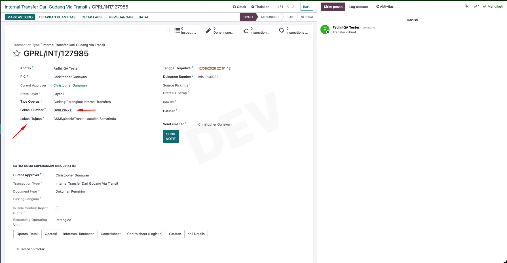
Inisasi Dokumen Kiriman Internal Transfer
Buat Documents > Internal Transfer, atau Documents draft > Internal Transfer. Pastikan di Source Location (Lokasi Kirim) atau Operating Unit memang sudah membuat master rak dan di dalam rak tersebut memang sudah terisi product yang akan dikirim.
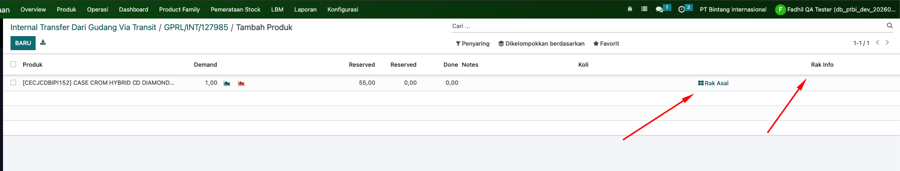
Tambahkan Produk pada dokumen
Contoh disini => pada dokumen yang sudah kita buat kita akan mengirimkan product [CECJCDBIPI152] 1 unit.
- Klik tab Operating/operasi
- tambahkan product yang diinginkan untuk dikirim
- Dibagian detail tersebut terlihat kolom rak asal dan juga info rak
-
Dibagian info rak dan rak asal akan terisi otomatis ketika
dokumen sudah di Konfirmasi
- Pastikan produk tersebut memang sudah tersedia di Master Rak sesuai dengan OU atau source location.
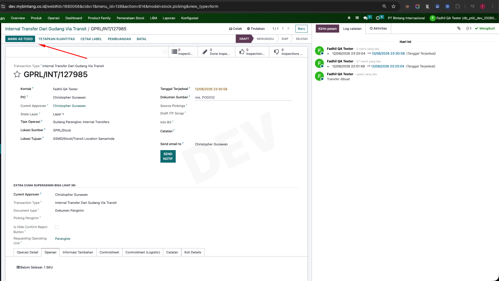
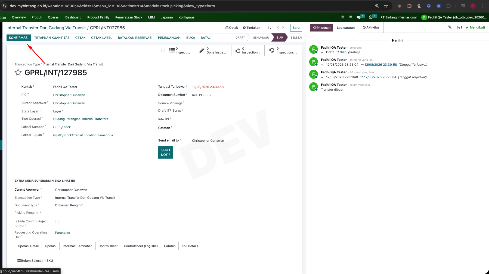
Proses Konfirmasi Dokumen
Dokumen yang sudah kita buat kita tekan button Mark As Todo, jika suda maka nanti akan muncul button Konfirmasi, bisa di cek image nya dengan di klik atau di swipe
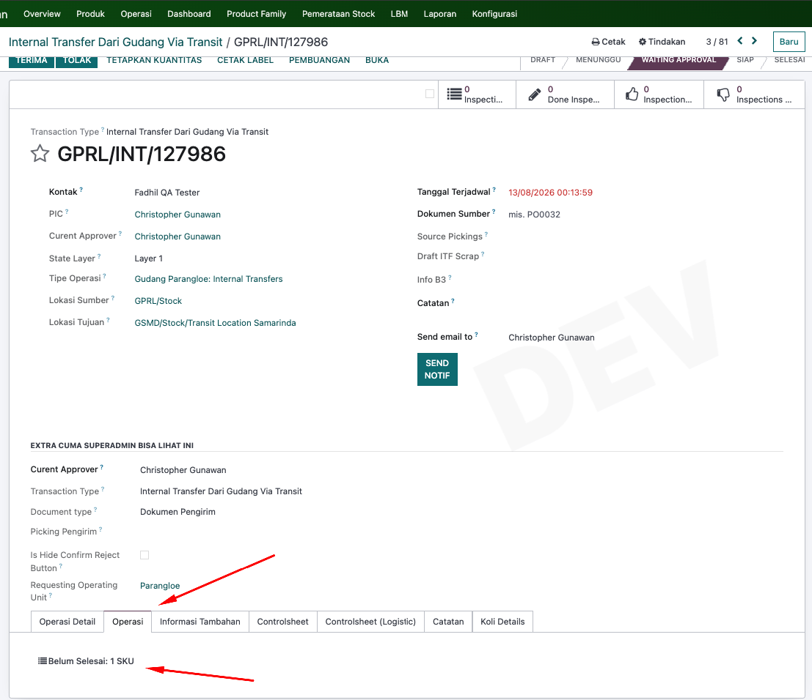
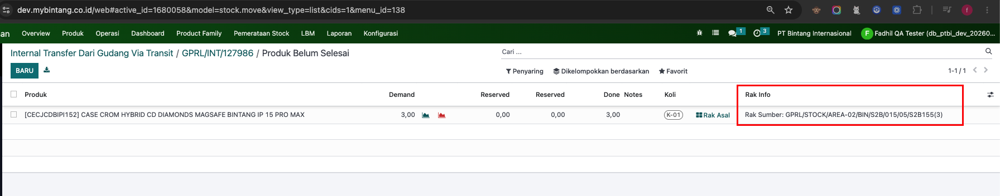
Alokasi Otomatis Source Rak
Buka Tab Operation, lalu cek Info Rak setelah tadi di konfirmasi maka nanti info rak akan otomatis terisi.
- Klik tab Operation
- Klik Button Product (Belum Selesai)
- Cek Info Rak Otomatis Terisi
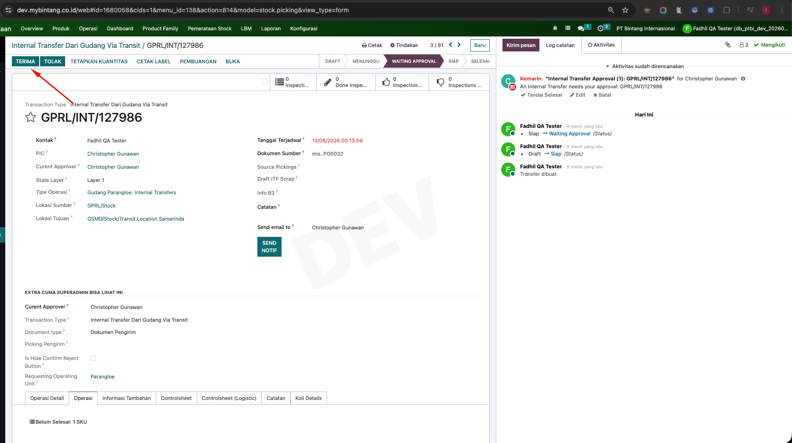
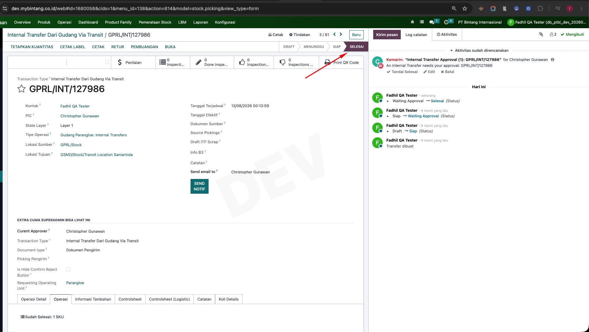
Proses Terima Dokumen Kirim
Tekan button Terima untuk menyelesaikan proses. Maka nanti status dokumen akan terupdate menjadi selesai. Jika sudah selesai nanti akan terbentuk dokumen terima
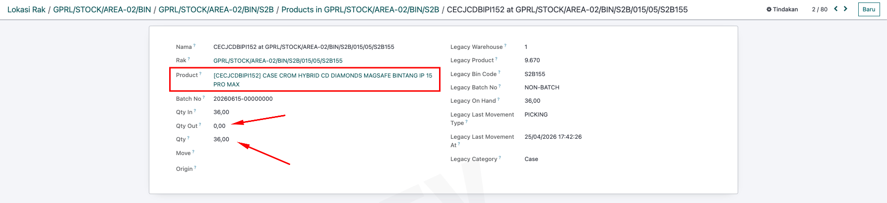
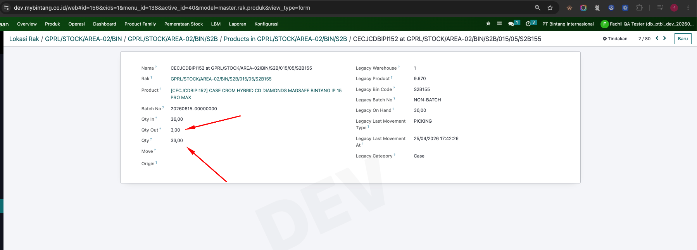
History Product di Rak
-
Bisa Kita Lihat untuk before product [CECJCDBIPI152] di Rak GPRL/STOCK/AREA-02/BIN/S2B/015/05/S2B155 memiliki 36 unit, lalu kita tadi sudah melakukan proses pengiriman dimana didokumen kirim itu mengambil dari rak tersebut sebanyak 3 unit.
-
Setelah proses pengiriman selesai maka kita bisa cek kembali di master rak untuk history product [CECJCDBIPI152] terdapat perubahan dari 36 unit menjadi 33 unit, lalu Qty Out disini juga bertambah 3 Unit
Dokumen Penerima
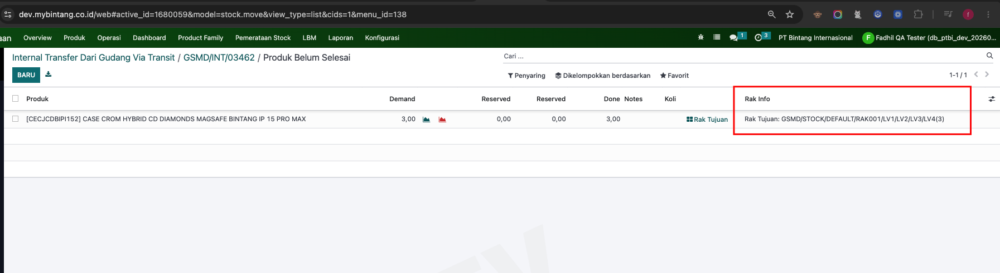
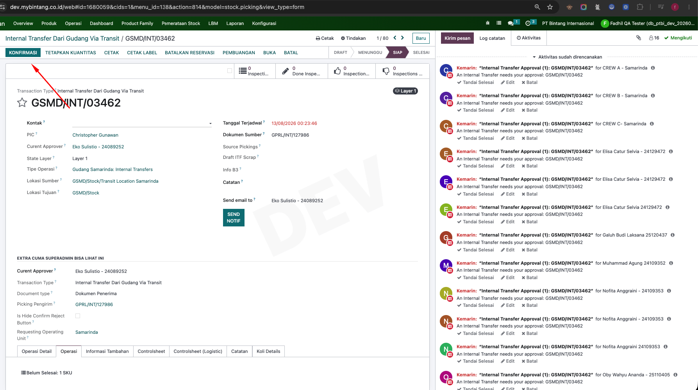
Dokumen Penerima Otomatis Terbentuk setelah Dokumen Kirim statusnya done.
-
Klik tab operation lalu cek info rak nya, jika pada lokasi ou dan gudang yang yang dituju memiliki rak akan otomatis terisi untuk info rak nya.
-
Jika sudah dicek kita bisa klik button Konfirmasi untuk menyelesaikan penerimaan barang. Maka nanti dokumen tersebut akan selesai statusnya.
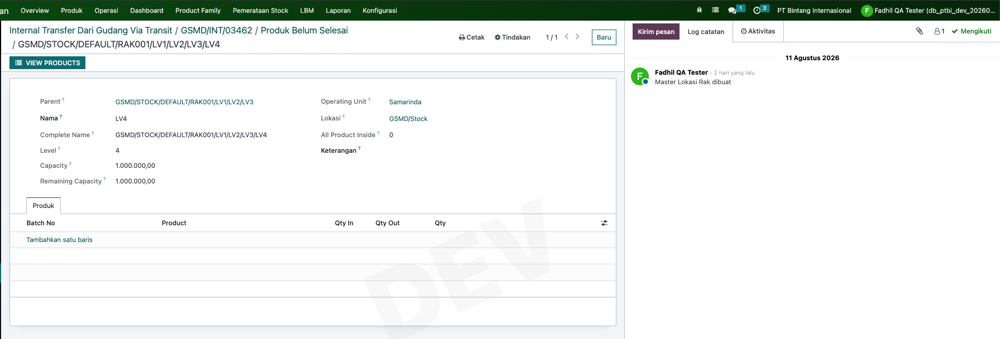
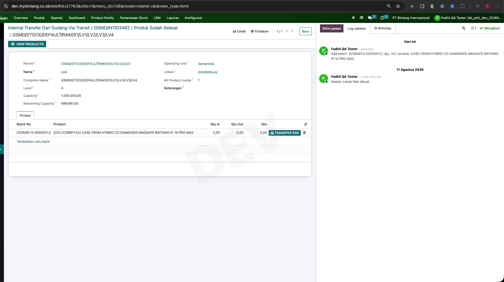
History Product di rak Sebelum dan Sesudah terima barang
-
Pada Image Pertama, bisa kita lihat untuk rak tersebut belum ada product nya.
-
Pada Image Kedua, bisa kita lihat untuk rak tersebut sudah ada product nya dan qty in dan qty keseluruhan sesuai dengan yang kita terima tadi yaitu 3 unit.
Transfer Antar Rak
Fitur Transfer Antar Rak untuk memindahkan product dari Rak Asal ke Rak Tujuan ataupun sebaliknya.
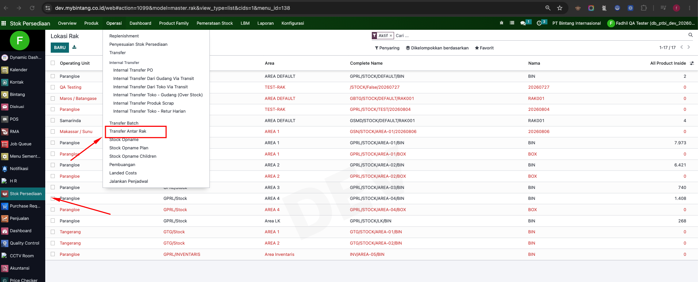
Buka menu Transfer Antar Rak
- Klik Modul Inventory
- Klik Menu Operation
- Klik submenu Transfer antar Rak
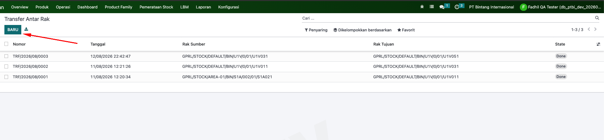
Buat Transfer Antar Rak
- Setelah terbuka maka akan menampilkan list transfer rak pernah dibuat
- Klik Button untuk membuat transfer rak baru.
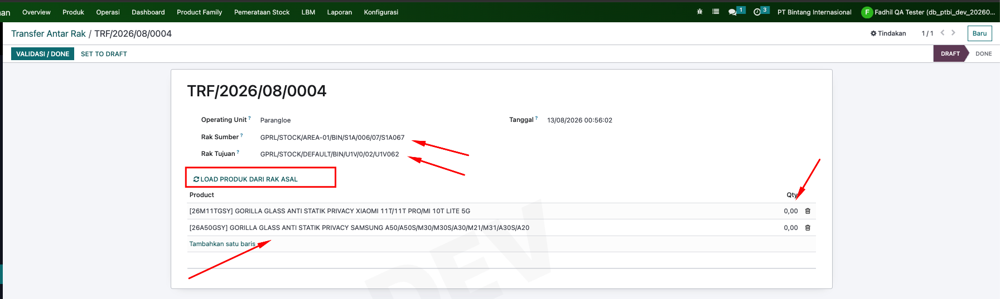
Mengisi Form Transfer antar rak
Terdapat field yang perlu diperhatikan yaitu :
- Operating Unit : Merupakan unit operasi yang akan melakukan transfer rak.
- Rak Sumber : Merupakan rak asal transfer.
- Rak Tujuan : Merupakan rak tujuan transfer.
-
Button Load Produk dari Rak Asal : Ini untuk memuat produk
yang ada dirak asal yang nantinya akan mengisi otomatis
table list produk dibawahnya.
(catatan : jika dirak asal tidak ada product maka table list produk tidak akan terisi). - Table List Produk : Ini untuk menampilkan produk yang akan ditransfer antar rak.
-
Kolom Qty : Ini untuk menentukan jumlah produk yang akan
ditransfer antar rak.
(catatan : qty tidak boleh lebih besar dari stok produk tersebut di rak asal). - Button "Set to Draft" : Ini untuk menyimpan form transfer antar rak menjadi status draft.
- Button "Validasi/Done" : Ini untuk memproses transfer antar rak (selesai).
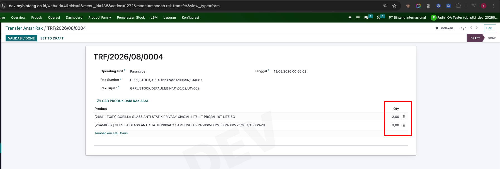
Mengisi Qty Product yang akan dikirim ke Rak Tujuan
Tentukan jumlah quantity yang akan ditransfer dari Rak Asal
ke Rak Tujuan. pastikan quantity sesuai dengan stok tersedia
dirak asal.
contoh disini : kita mengirimkan 2 SKU dari rak asal
yaitu :
- SKU 26M11TGSY - 2 Unit
- SKU 26A50GSY - 3 Unit
- Jika sudah bisa kita klik untuk memproses pemindahan barang tersebut.
- setelah kita klik done, status dokumen akan menjadi selesai
History Product pada Rak asal dan tujuan sebelum melakukan transfer antar rak.
Pada Gambar ke 1 - 2, merupakan kondisi Rak Asal dan Rak Tujuan sebelum dokumen transfer antar rak.
-
Rak Asal :
GPRL/STOCK/AREA-01/BIN/S1A/006/07/S1A067
- Pada rak asal sebelum dokumen transfer antar rak, tidak ada transaksi bisa kita lihat Qty Out nya masih 0, lalu Qty Total ada 17 untuk SKU [26M11TGSY] 17 Unit, SKU [26A50GSY] 15 Unit
-
Rak Tujuan :
GPRL/STOCK/DEFAULT/BIN/U1V/0/02/U1V062
- Pada rak tujuan sebelum dokumen transfer antar rak, tidak ada transaksi bisa kita lihat belum ada product pada rak tersebut.
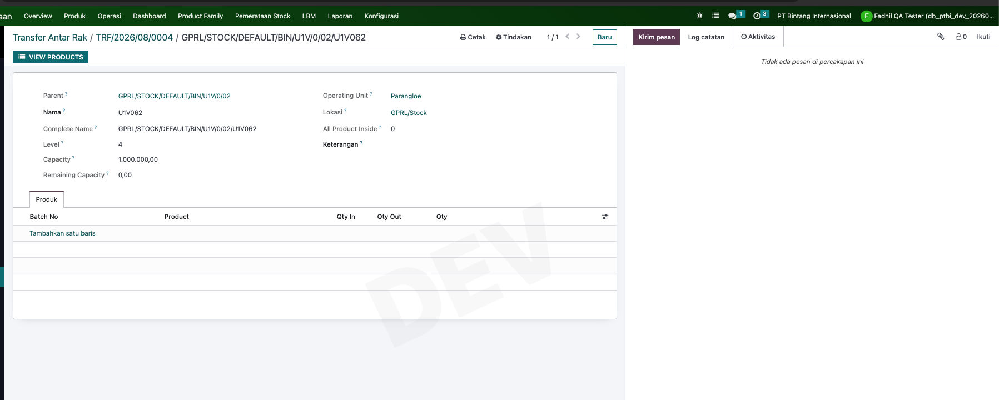
History Product pada Rak asal dan tujuan sesudah dokumen transfer antar rak.
Pada Gambar ke 3 - 4, merupakan kondisi Rak Asal dan Rak Tujuan sesudah dokumen transfer antar rak.
-
Rak Asal :
GPRL/STOCK/AREA-01/BIN/S1A/006/07/S1A067
- Bisa dilihat QTY Out nya bertambah, lalu Qty Total pada rak asal berkurang. Sesuai dengan jumlah yang sudah kita transfer tadi.
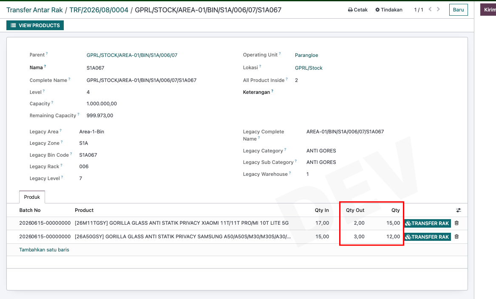
-
Rak Tujuan :
GPRL/STOCK/DEFAULT/BIN/U1V/0/02/U1V062
- Bisa dilihat QTY In nya bertambah, lalu Qty Total pada rak tujuan bertambah. Sesuai dengan Product dan jumlah yang kita transfer tadi.
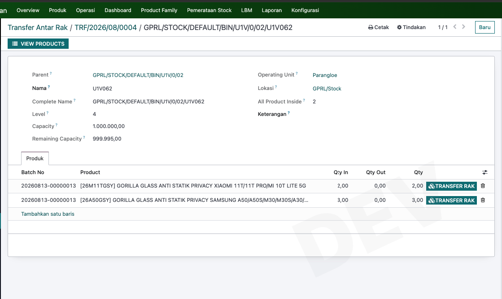